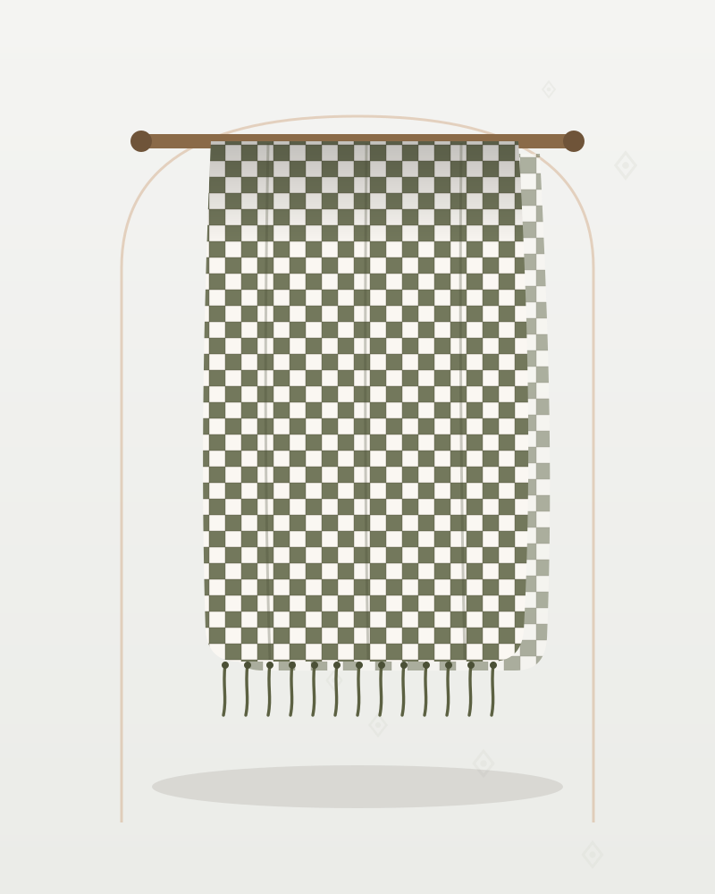

Mezopotamya · Puşi
Haki Püsküllü Puşi – Krem Zeminli Viskon Dokuma
295 TL
Ön sipariş tahmini fiyatıdır · KDV dahil
Haki puşi; krem zemin üzerine haki baklava desenli viskon dokuma. Hafif yapısıyla dört mevsim boyunlukta veya omuz örtüsü olarak kullanılabilen bir modeldir.
💡 Henüz satış yapılmıyor. Talep bıraktığınızda bu model, satış başladığında öncelikli olarak üretilecek ve size özel erken erişim tanınacak.
| Kategori | Puşi |
|---|---|
| Yöre | Mezopotamya |
| Kumaş | Viskon Dokuma |
| Renk | Haki |
| Durum | Ön sipariş (talep toplama aşamasında) |
| Ürün Kodu | KY-PHV-29 |